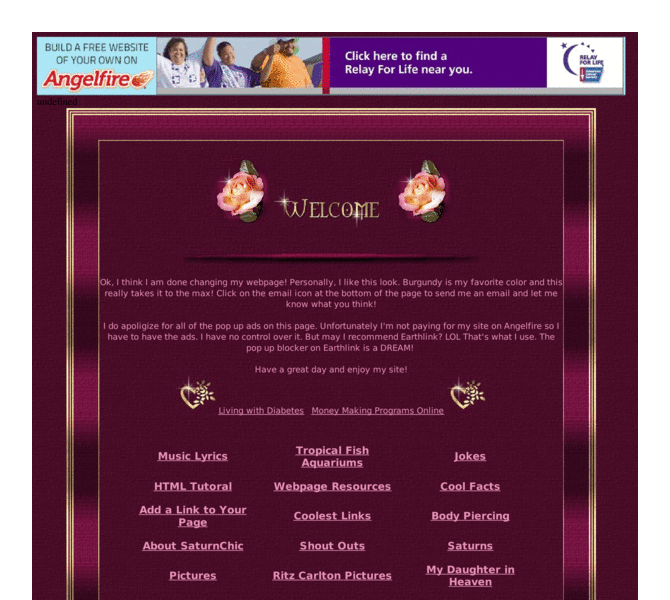

Previewing: SaturnChic's Page Previewing: SaturnChic's Page 
Use the left/right red arrow controls to navigate through this ring - Click the preview image to visit the member site.

THIS SITE HAS IT ALL! Not only is it fun and informative, it's interactive. There's HTML help, aquarium set-up information, memorials, debates, links, stories, music lyrics, body piercing information, pictures, jokes, and SO much more...3 years building! For anyone who surfs the net, this is the site to see!
SaturnChic's Page owned by:
 saturnchic saturnchic
A member of the original webring since 10/09/2002.
|
|